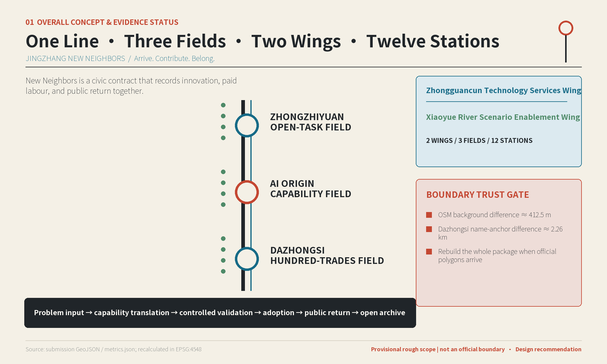
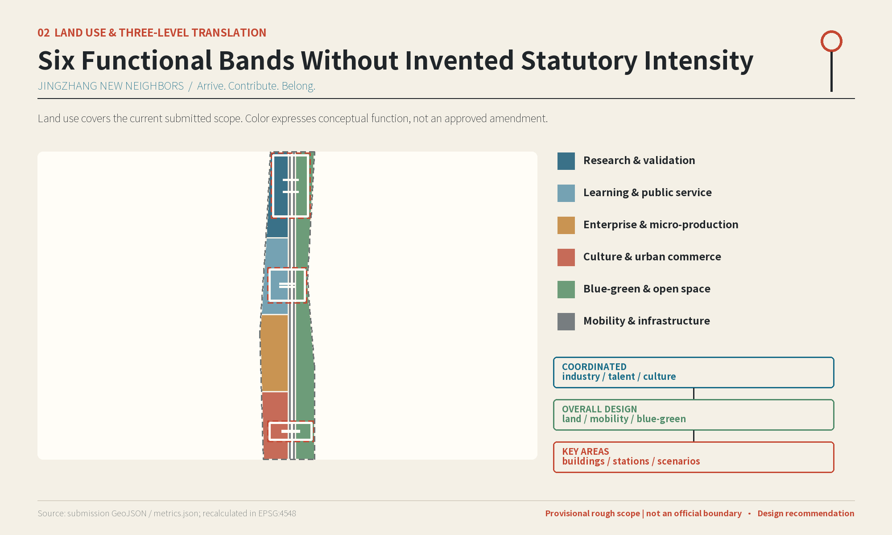
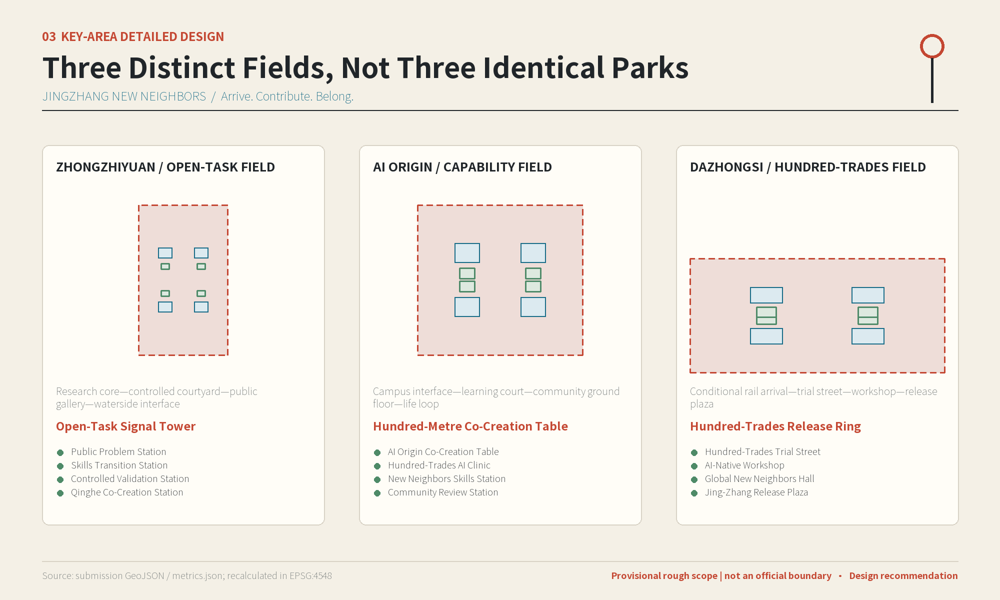
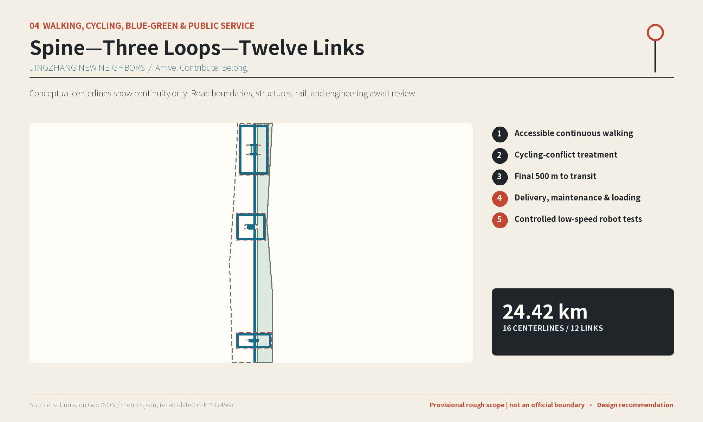
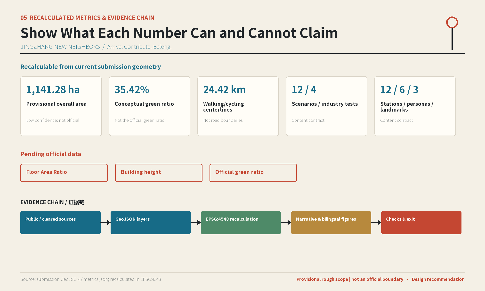

Skills Navigator
AI Origin
learning01 OVERALL CONCEPT & EVIDENCE STATUS
A civic partnership that lets researchers, career changers, residents, frontline workers, and microbusinesses create and benefit together.
New Neighbors is a civic contract that records innovation, paid labour, and public return together.

Problem input → capability translation → controlled validation → adoption → public return → open archive


Conceptual centerlines show continuity only. Road boundaries, structures, rail, and engineering await review.
AI Origin
learningZhongzhiyuan
labourZhongzhiyuan
skillsAI Origin
businessDazhongsi
industry testDazhongsi
copyrightAI Origin
industry testZhongzhiyuan
industry testAI Origin
industry testMutual-Benefit Line
public spacethree landmarks
culturethree fields
governanceSource: submission GeoJSON / metrics.json; recalculated in EPSG:4548


Evidence maturity replaces promised implementation years.
Sources, interviews, mobile service, and temporary programs.
Links and shared ground floors after survey and ownership checks.
Permanent facilities only after professional gates pass.
Return data, remove equipment, settle labour, and publish review.